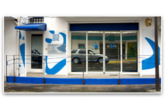

Adrès nichtwèl : scp.kacy@notaires.fr
Liméwo : 0590 820 130
Horaires standard téléphonique
lendi, mawdi é jédi : 14h30 - 17h30
mèkrèdi é vandrèdi : 9h - 12h30
Faks : 0590 912 270
Adrès an nou : 4, Rue Achille René-Boisneuf
97110 POINTE-A-PITRE
Liméwo : 0590 820 130
Horaires standard téléphonique
lendi, mawdi é jédi : 14h30 - 17h30
mèkrèdi é vandrèdi : 9h - 12h30
Faks : 0590 912 270
Adrès an nou : 4, Rue Achille René-Boisneuf
97110 POINTE-A-PITRE

Réception clientèle :
Sur rendez-vous uniquement
En visioconférence sécurisée
ou en présentiel
Permanence accueil public
mawdi é jédi matins : 8h-12h30
(port du masque obligatoire)
Sur rendez-vous uniquement
En visioconférence sécurisée
ou en présentiel
Permanence accueil public
mawdi é jédi matins : 8h-12h30
(port du masque obligatoire)

Notè Ramplassan :
Tamara CHERGUI-VILO (TCV) : tamara.chergui-vilo.97110@notaires.frLétchip koudmen :
Akey fisik é telefonik :
Courriel : scp.kacy@notaires.frTél : 0590 820 130
Sandra PLUMAIN (SP)
Administratè :
Bérangère BELAIR (BB) : berangere.belair.97110@notaires.frCamille AUBLIN (CA) : camille.aublin.97110@notaires.fr
Julienne CATAN (JC) : julienne.catan.97110@notaires.fr
Claire CUISENIER-JEANLYS (CCJ) : claire.cuisenier-jeanlys.97110@notaires.fr
Anthony KACY (AKB) : anthony.kacy.97110@notaires.fr
Stéphanie MOLAT (SM) : stephanie.molat.97110@notaires.fr
Aurore RAMASSAMY (AR) : aurore.ramassamy.97110@notaires.fr
Mélodie THOMAS (MT) : melodie.thomas.97110@notaires.fr
Assistan a administratè :
Astride ALCIDE (AA) : astride.alcide.97110@notaires.frLaëtitia DESVARIEUX (LD) : laetitia.desvarieux.97110@notaires.fr

Sèrvis fowmalité :
Adrès nichtwèl : formalites.97110@notaires.fr- Fowmalité avan signati
Jatucia LEFAITE (JL)
Stacie THETIS (ST)
Déborah VALLA (DV)
- Fowmalité après signati
Ed fowmalis:
Emilie FELTRO (EF)
Sewvis awchiv é kontak pawténè :
Demand kopi a lak-la: archives.97110@notaires.frFabrice SANTORIN (FS)

Lajan-konté :
Courriel : comptabilite.97110@notaires.frLinda OPET (LO)
Afin d'éviter tout retard, erreur d'imputation ou rejet, le libellé du virement devra OBLIGATOIREMENT comporter les références transmises par l'office.